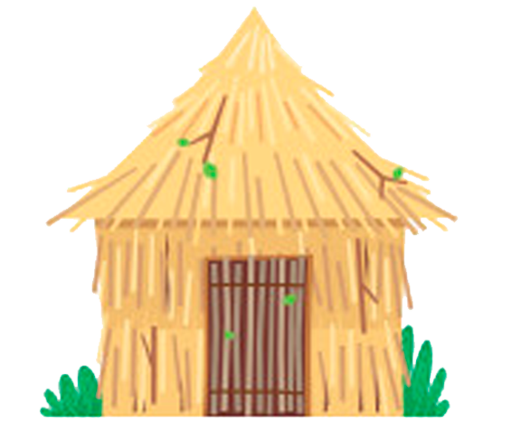
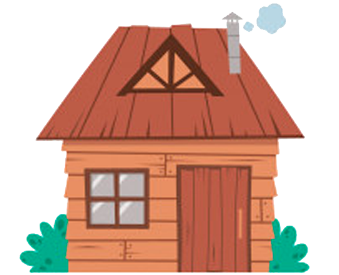
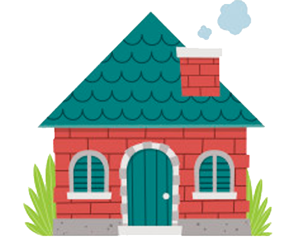

Había una vez tres cerditos que eran hermanos y se fueron por el mundo a conseguir fortuna. El más grande les dijo a sus hermanos que sería bueno que se pusieran a construir sus propias casas para estar protegidos. A los otros dos les pareció una buena idea, y se pusieron manos a la obra, cada uno construyó su casita.
"La mía será de paja"
La paja es blanda y se puede sujetar con facilidad. Terminaré muy pronto y podré ir a jugar. -Dijo el hermano pequeño.
El hermano mediano decidió que su casa sería de madera:
- Puedo encontrar un montón de madera por los alrededores - explicó a sus hermanos, -
Construiré mi casa en un santiamén con todos estos troncos y me iré también a jugar.
"La mía será de madera"
El mayor decidió construir su casa con ladrillos. - Aunque me cueste mucho esfuerzo, será muy fuerte y resistente, y dentro estaré a salvo del lobo. Le pondré una chimenea para asar las bellotas y hacer caldo de zanahorias.
"La mía será de ladrillos"
Cuando las tres casitas estuvieron terminadas, los cerditos cantaban y bailaban en la puerta, felices por haber acabado con el problema:
"¡Quién teme al Lobo Feroz, al Lobo, al Lobo!"
"¡Quién teme al Lobo Feroz, al Lobo, al Lobo!"
Detrás de un árbol grande apareció el lobo, rugiendo de hambre y gritando:
"Cerditos, ¡me los voy a comer!"
Cada uno se escondió en su casa, pensando que estaban a salvo, pero el Lobo Feroz se encaminó a la casita de paja del hermano pequeño y en la puerta aulló:
- ¡Cerdito, ábreme la puerta!
- No, no, no, no te voy a abrir. - Pues si no me abres... ¡Soplaré y soplaré y la casita derribaré!
Y sopló con todas sus fuerzas, sopló y sopló y la casita de paja se vino abajo. El cerdito pequeño corrió lo más rápido que pudo y entró en la casa de madera del hermano mediano. - ¡Quién teme al Lobo Feroz, al Lobo, al Lobo! - ¡Quién teme al Lobo Feroz, al Lobo Feroz! cantaban desde dentro los cerditos. De nuevo el Lobo, más enfurecido que antes al sentirse engañado, se colocó delante de la puerta y comenzó a soplar y soplar gruñendo: - ¡Cerditos, abridme la puerta! - No, no, no, no te vamos a abrir. - Pues si no me abrís... ¡Soplaré y soplaré y la casita derribaré!
La madera crujió, y las paredes cayeron y los dos cerditos corrieron a refugiarse en la casa de ladrillo de su hermano mayor.
- ¡Quién teme al Lobo Feroz, al Lobo, al Lobo!
- ¡Quién teme al Lobo Feroz, al Lobo Feroz! - cantaban desde dentro los cerditos. El lobo estaba realmente enfadado y hambriento, y ahora deseaba comerse a los Tres Cerditos más que nunca, y frente a la puerta dijo:
- ¡Cerditos, abridme la puerta!
- No, no, no, no te vamos a abrir.
- Pues si no me abrís... ¡Soplaré y soplaré y la casita derribaré!
Y se puso a soplar tan fuerte como el viento de invierno. Sopló y sopló, pero la casita de ladrillos era muy resistente y no conseguía derribarla. Decidió trepar por la pared y entrar por la chimenea. Se deslizó hacia abajo...
Y cayó en el caldero donde el cerdito mayor estaba hirviendo sopa de nabos. Escaldado y con el estómago vacío salió huyendo hacia el lago. Los cerditos no lo volvieron a ver. El mayor de ellos regañó a los otros dos por haber sido tan perezosos y poner en peligro sus propias vidas, y si algún día vais por el bosque y veis tres cerdos, sabréis que son los Tres Cerditos porque les gusta cantar:
"¡Quién teme al Lobo Feroz, al Lobo, al Lobo!
¡Quién teme al Lobo Feroz, al Lobo, al Lobo!"